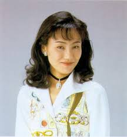
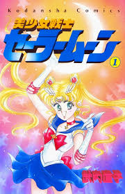
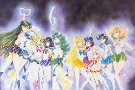

Early life
Naoko Takeuchi was born on March 15, 1967 in Kofu, Yamanashi to parents Kenji and Ikkuko Takeuchi. In later works she would give the names of her relatives in the manga Sailor Moon. During high school which later influenced her later works she would wear sailor uniform, joined astronomy and manga clubs which inspired her to become a mangaka. However, from the urging of her father if art does not work out was to choose a different career path. In university she later attended Kyoritsu College of Pharmacy, and later received a degree in chemistry and became a licensed pharmacist.

Career
While in university she published the manga Love Call which later recieved the Nakayoshi New Mangaka Award for new manga artists and was published in September 1986 issue of the manga magazine Nakayoshi Deluxe During her time as a licensed pharmacist, she was encouraged by her editor to continue to draw manga. After completing The Cherry Project a figure. Takeuchi wanted to write a manga about magical girls. Her editor, Osappi suggested she draw the girls in sailor suits like traditional school uniforms in Japan. This lead to the creation of the creation of the manga Codename Sailor V. Due to the popularity of Codename Sailor V she was approached by Toei Animation to make a animated show, or anime with a team of sailor suited girls which lead to the creation of Sailor Moon. A story about a young women named Usagi Tsukino, who becomes the guardation of love and justice who fights evil. Takeuchi made this character, so young girls could relate towards having female representation and empowerment. Due it the popularity of Sailor Moon it became a world wide hit with: two tv shows, movies, musicals, brand collabs, and video games.
List of works
- 1987-1988:Chocolate Christmas
- 1989-1990:Maria
- 1990-1991:The Cherry Project
- 1991-1997:Codename Sailor V
- 1991-1997:Pretty Guardian Sailor Moon
- 1993:Miss Rain
- 1996-1997:Prism Time
- 1997:PQ Angels
- 1998-2004:Princess Naoko Takeuchi's Return-to-Society Punch!!
- 2001:Toki Meka!
- 2005-2006:Love Witch
Reflection
I chose as Naoko as my tribute due to her work with Sailor Moon. As a child, I looked up to Sailor Moon, due to her strength, compassion, strength, and resilience! I loved, having Sailor Moon as my influence growing up to never give up and as a positive role model.
